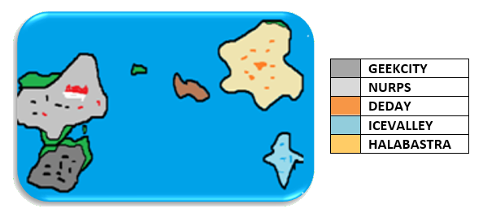
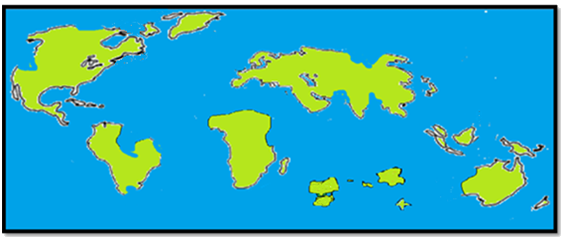

Story
📖
The Geekstas (or GKT) is a game/series/anime of the adventure/comedy/action/drama/horror genre? developed by ... (not yet developed). The meaning of the name is not exact, but a mixture of two words from the English language: geek (nerd, people dedicated to studying) and gangster (people dedicated to organized crime, also refers to a style of rappers). In the story this name is given to the duo of the main antagonists: Mr. Master Cracker and Shadow G. The plot takes place approximately in the year 2,570 AD, where the Earth had its continents even more reduced and separated, many peoples became extinct and others mixed. The language was eventually unified, with only a few groups speaking a different language for their own reasons. Because of an infestation of unknown and aggressive animals (called "fractions"? – common forms / "potencys"? – evolved forms) spread everywhere, the world population was extremely reduced, forcing almost all countries and even cities to be surrounded by walls to prevent these "animals" from entering and attacking citizens. This greatly affected trade, and people were deprived of travel, with only a few requirements and exceptions. Even so, the population began to stabilize and this began to be seen as normal. With this situation, people began to value even more a human attribute: physical strength. More fighting schools are being implemented to prepare young people and adults for a possible attack by these animals. In this turbulent time, in a new archipelago (found near where the Americas used to be) called Smart Archipélago, was where Sejo was born, son of Omenn, creator of Geekcity (one of the most evolved cities in the archipelago). And so begins The Geekstas 1: with Sejo, the main protagonist, at the age of 18 and finishing high school, at a spring camp of his class. Note: A more appropriate beginning to the story would be the day Omenn left Geekcity; telling Sejo's best life and other characters.
 
Note that many continents were reduced and many lands disappeared, did this occur so much by the "fractions"? such as by World War 3 and the sending of several nuclear bombs. World War 3 occurred in the middle of the year 2,520. The reasons are still mysterious, but a search center reported that it all started with threats on the internet. Where hackers claimed to have access to confidential information about the government of another country, asking for large amounts of money in exchange for its secrecy. This led to a series of other conflicts between the UN countries, causing them to break the peace agreement because they felt betrayed by each other...
GEEKSTAS 1
P.S : The story needs adjustments, as it is based on the initial design of RPGMakerXP.
SUMMARY At the end of the semester, the school in Sejo does a summer recreation activity: a camp. In this camp, students are attacked by two beings that appeared to be aliens. By almost killing the students, the beings leave, ruining the ride and leaving everyone hospitalized in a coma at the Geekcity hospital. The heroes, who fought more directly with the two unknown beings, were the ones who were most injured, spending about 1 year in treatment. Because of a slight amnesia, the heroes don't remember exactly what happened. A year after being discharged from the hospital, Sejo has a dream in which he remembers what happened (which in this case the dream is the beginning of the game) and decides to leave for Nurps and ask the king, who is recognized for his great wisdom. When he tells the king the dream, he informs them that there is a cave in Halabastra that serves as a connection to the world in which those two beings live. Sejo gathers his allies and sets out on an adventure to this cave. (...) As they pass through this cave they find a luminous exit, and as they pass through it they come to a place which seemed to be what the king spoke of. In this place they see a large tower surrounded by lava, and at the top of this tower they see the two beings (what were they doing?). They go up there and fight a "rematch", where they emerge victorious. But, during the battle, everyone is teleported to somewhere similar to the cideral space, and upon defeating the beings they break the spell and discover that they were actually floating in the sky, and begin to fall... At this moment that they start to fall is where The Geekstas 1 ends, and then it is at this same moment that The Geekstas 2 begins.
GEEKSTAS 2
After landing on a beach off the coast of Halabaster, the heroes arrive in a town called Powderflour. As they head to Halabastra, Jack suddenly disappears from the middle of the group, and the heroes go looking for him, but do not find him. In the middle of this search they meet strange people who say they know Jack and try to explain why he disappeared.
The heroes then decide to separate, each going to their home to return to their normal life again. Then they leave Getorvis in Halabastra and go to Nurps.
After returning to Nurps, the heroes go to the garden of the king's castle, and there they see him watering the flowers. Clari , when she sees her father again, runs towards her and the two give a strong hug. Thus, Clari returns to being the princess of Nurps and the remaining four heroes return to Geekcity. In Geekcity each hero returns to his home to get back to his day-to-day life. They look for the gift that a mysterious woman says Jack left them, but no one finds the gift.
4 years pass where each character develops particularly.
Sejo visits the home of his relatives, in this case his mother Silia and his younger sister Sara. The two are euphoric to see him after hearing the news of his adventures out there. Sara creates an immense desire to learn how to fight like Sejo. He promises to find a way to train her. She, despite being clumsy, has a great talent for fighting. Sejo thinks about taking his sister to train with his former master: Nazu, who lives in the mountains of a distant valley, and needs a boat. The two go at dawn on the coast of the city to look for a boat, and find a very large boat. Sejo asks Sara to wait and enters alone to investigate, when he gets on the boat he realizes that he already had an owner and that he was leaving, when he realized that he was already on the high seas and that he would not be able to return, he wrote a note and put it in a bottle and threw it towards Sara. After setting sail, Sejo comes across a pirate crew. (..) After a few adventures there, he becomes the new captain of that crew. So Sejo returns to pick up Sara and take her to Nazu. As a captain, Sejo learned swordsmanship and began to use a French pirate saber.
Kash decided to meditate on top of a mountain to free himself from bad memories and discover his own identity. But at the top of this mountain there was the nest of a large bird monster, which felt threatened by Kash's presence and attacked him in the eye, almost taking away his vision, but Kash when trying to fight back saw his chicks and hesitated. Kash decided to return to that nest every day to see that bird, until one day he managed to train it, becoming faithful companions: Kash and his giant bird that he affectionately calls "Bird". After earning Passover's loyalty, Kash became interested in exploring the skies, just like a bird. So he decided to be an aviator. He joined the platoon of the Geekcity V.R.U.M (Road Shipment of the Military Union) armada. With his companion Bird next to his plane, Kash feared no sky anywhere.
Vito started his project of an M.E.C.H.A, and took the opportunity to develop a sword that reacted with the device on his arm, he spent the 4 years inside the laboratory doing this, as a consequence his hair grew a lot, but not his beard because he doesn't have a beard.
M. Kunoichi also went to visit his family, and stayed there for a while, his older sister Mizao, his younger brother Mitsu, and his parents Jonn and Monna. One day his younger brother goes to play near the house and finds a mysterious object similar to a lantern, this day is Mizo's birthday, and Mitsu decides to give that object as a birthday gift to his sister. After the party, upon receiving the gift, Mizo decides to go to the dark bush to test her new flashlight, what she didn't know is that that object was actually a hologram message from MCP asking whoever received the object the opportunity to visit her HQ. There Mizo learns the mysteries of Master and Shadow.
Caty's life was a secret until now: why did she have a tail? Why has no one ever bothered to ask that? That's that. Caty was sent to society after being expelled from her feline village. Her father, Leo Pard trained her to be a warrior, despite always being criticized for having relations with a human. Just like in the movie Tarzan, Caty was the only human-looking child in the group, the other cubs are all pure felines. But Caty has always been too naïve and weak to fight. Her mother was treated like a goddess in the village, but after they realized that she was weaker than everyone else, she was expelled from the village by the chief and husband Leo Pard. Caty lives with her mother in the city. But after returning home, he decided to visit his father to tell his adventures and perhaps make him proud. To her surprise, when she arrives at the village she comes across an arena, she wins overall and is recognized by everyone in the village, being accepted back.
Claire After returning to his royal life he began to exercise his talents with art. He began to make art paintings.
Getorvis remained with his strange life, until one day he learned that a marathon was taking place in the ancient catacombs of the village pyramid. The reporter asked people who would be brave enough to risk it alone for 3 days inside the catacomb. Getorvis was pushed forward, and when he asked him, his addiction to language condemned him to accept it by saying "it's logical". There, Getorvis is killed by a mysterious man. But after 2 years he is resurrected by Shadow G. becoming one of his minions and seeking revenge. His body remained fetid as it was after his death.
Jack, after disappearing in Halabastra, returned to MCP HQ to report the events to his boss.
After staying in the MCP for a while, Jack, despite being a ninja, still had feelings for the heroes. He then asked Meinov to send a recording to Earth requesting that one of the heroes visit the HQ. In this case, it was Kunoichi.
After a year, Jack learned the news that the leader of his Needles clan, Suzanaa A., had been seriously injured and was on her deathbed.
Jack used the shunpo and quickly reached her, and upon realizing that she would soon die, used a jutsu to seal her soul in a scroll.
From that day on, Jack always walked with his leader's scroll on his back, his goal was to make Shadow G. revive her.
Jack spent 2 years searching for techniques to free Suzanaa A.'s soul in battle.
Suzanaa A. also had a typical weapon: her cursed throwable katana, which was the symbol of her strength. Jack was its new bearer.
EXT. In these 4 years the heroes see each other and go out together, go to dances, parties, many funny and entertaining things happen between them.
After 4 years, a group of Nurps soldiers arrive desperate in Geekcity to break the news that Nurps was being attacked by an extremely strong being and that the city was all on fire. Of the 5 heroes (Sejo, Kash, Vito, Kunoichi and Caty), the only ones who were in town were Sejo (he had his ship on board at the docks) and Vito, but Vito seemed very busy and said he couldn't go.
Sejo then leaves alone for Nurps.
When he gets there, he sees dozens of fallen soldiers and others surrounding a certain area in the city, as Sejo approaches the soldiers already recognize him and rejoice, taking him to where the enemy was. Sejo then meets Blaze, a "potency" in human form and very similar in appearance to Sejo himself.
When they see Sejo, the great hero who defeated Shadow G, the kings and his daughter and now princess, Clari, are very excited, soon a circle is formed between Sejo and Blaze between soldiers and the crowd, all cheering for Sejo. Blaze introduces himself to Sejo and says some things that provoke him and already make him start the fight. The two fight fiercely, but Blaze, to everyone's amazement, ends up winning and leaving Sejo on the ground. The crowd is gripped by fear and begins to walk away, but Blaze laughs and says that he will give Sejo a second chance, setting a date for an all-or-nothing rematch, and in a burst of fire, Blaze disappears.
After a few moments, Sejo gets up with difficulty, and embarrassed tells everyone that next time he would not lose again, and faints, being taken to the medical center of the King's castle. There his wounds are treated, Clari goes to Sejo and tells him not to feel bad about losing, and that she still considered him the best fighter of all. This encouraged him to train as hard as possible for the rematch.
Sejo then heads to Geekcity to train with his crew, creating several new moves, including his trademark: "Equator", "Greenwich" and his most powerful move: "Hissatsu: Ultimate Death Bayblade".
In the meantime, Kash returns from his aeronautics mission, Vito finishes (...)
Chapter 1
Dream -> Nurps
Chapter 2
Nurps -> Raft
Chapter 3
Raft -> Halabastra
Chapter 4
Halabastra -> Cave Error
Chapter 5
Cave Error -> Ending
Chapter 1
Powderflour -> Geekcity
Chapter 2
Geekcity (Mizo) -> Glacial Cave
Chapter 3
Glacial Cave -> Graveyard
Chapter 4
Graveyard -> MCP Outbreak
Chapter 5
MCP Outbreak -> Ending